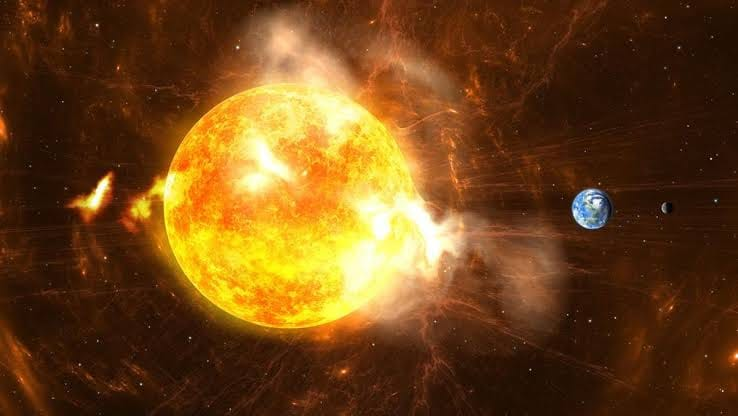

Matahari
Matahari adalah sebuah bintang deret utama raksasa yang terletak tepat di pusat Tata Surya kita dan memegang peranan paling vital bagi kelangsungan seluruh sistem kosmik ini. Dengan massa yang mencakup lebih dari sembilan puluh sembilan persen dari total keseluruhan massa di Tata Surya, Matahari memancarkan energi panas dan cahaya yang luar biasa besar melalui reaksi fusi nuklir yang terjadi terus-menerus di inti bagian dalamnya. Gaya gravitasi raksasa yang dimilikinya bekerja sebagai jangkar kosmik yang sangat kuat, memastikan agar seluruh planet, planet kerdil, asteroid, serta komet tetap berada pada jalur orbitnya yang stabil dan teratur tanpa terlempar ke dalam dinginnya ruang angkasa antarbintang.